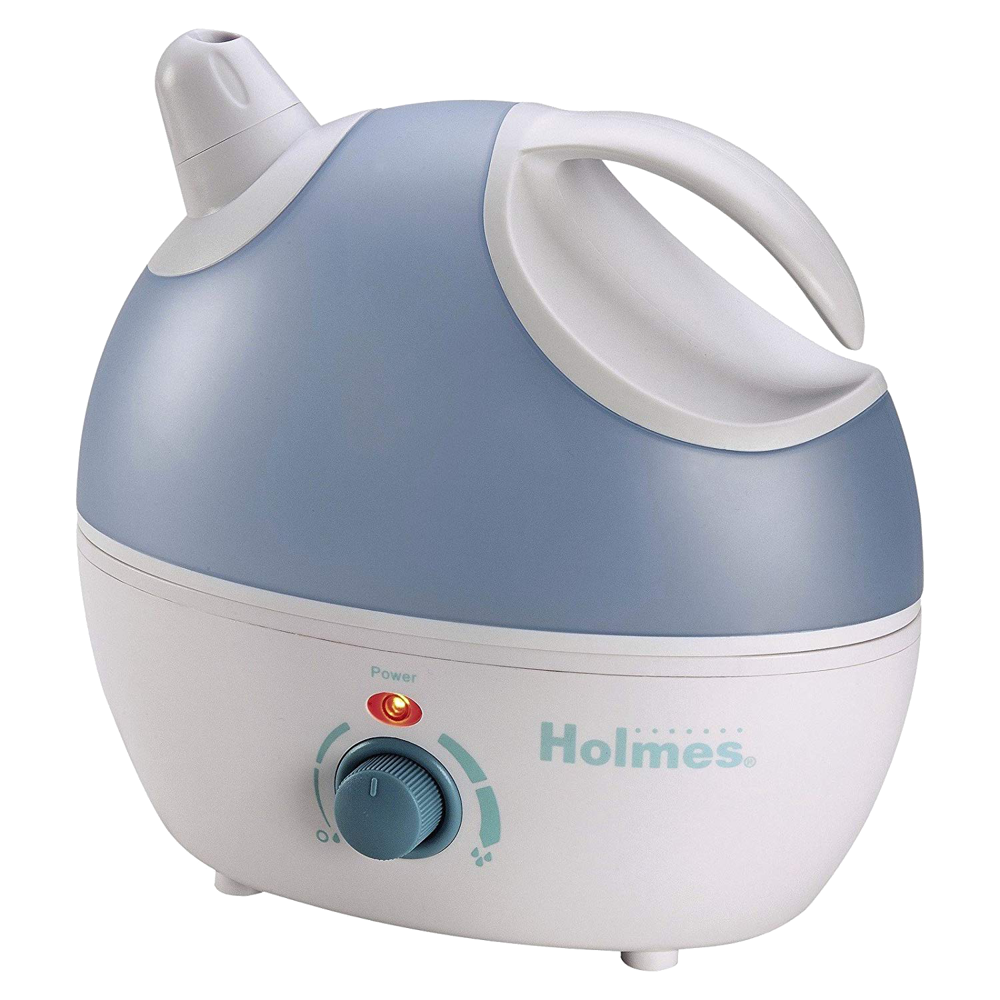

Do's and Don'ts of Placing Your Humidifier
To begin, plug the humidifier into a 120V electrical outlet (American standard for most households).

- DO place humidifier and cord in a low-traffic area that children cannot access
- DO place humidifier at least 4 inches (10cm) away from wall AND face Moisture Outlet away from wall, too
- DO place humidifier on a firm and level surface not susceptible to water damage. Optional: Place waterproof mat or pad under it
- DO place humidifier away from overhanging surfaces like tables to prevent damage to furniture
- DO NOT use humidifier outdoors
- DO NOT place humidifier near heat sources like stoves, radiators, and heaters
- DO NOT use humidifier in a room where humidity levels are in excess of 50%
- DO NOT hide cord underneath rugs
- DO NOT immerse humidifier in water or any sort of liquid; the entire unit DOES NOT need to be washed
Moving Your Humidifier?
When changing location of humidifier, DO NOT move it until it has been completely cooled down. DO follow all of the above steps listed.